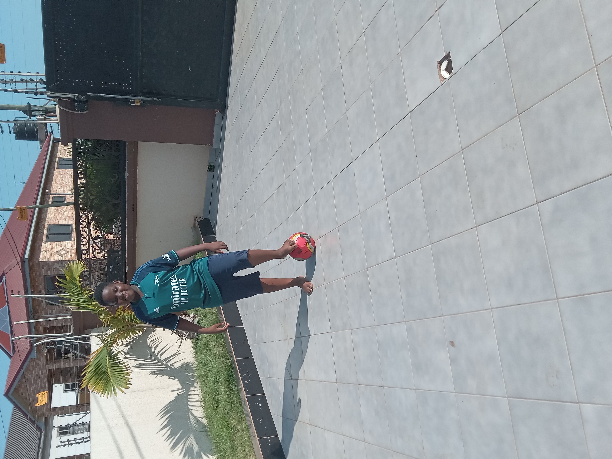

My name is Morgan Dakorah. I am 8 years old. I come from Kalsegra in the Upper West region but I live in Accra in Ashongman Estate in Brigde Skyfalls. I attend kids at heart international school. I attend church at St Mark Catholic Church. I am dark in complexion. The name of my parents are Mr and Mrs Dakorah.I am in class 5 in my school.I have 1 sibling. He is my elder brother Marvin. My favourite colour is red. My hair is dark and short. My eyes are small and cute. I have a medium sized nose. At my leisure time i like to engage myself in physical activities such as football and tennis. My favourite instrument is the guitar and piano. My favourite food is fried rice and plantain.i am short and plum and i am 4'7. I am a proud Ghanaian.My favourite football club is Arsenal also known as the Gunners. I like watching football on my television. That is all I can write about myself Thank You.
The school I attend is called Kids At Heart international School. The school is not that big also the school does not use the Ghana education system, they use the British education system. The teachers are very kind and sweet.All the classes are at the back of the school. Infront of the school there is a basketball court and a small football pitch and the principal's office is the too.The school was made in 2011. Before you can join the school you have to write an entrance exam. When you are done, in a few days later, they will call you to come for the uniform and the day before the first term starts, your parents will go to the school and pay for the books. Does in the reception do Physical Education on Tuesdays,Primary do Physical Education on Wednesdays and secondary do Physical Education on Thursdays. That is all I can write about my school Thank You for your time.
My Hobbie is football. Football is my favourite sport. it is also exersize. Football is when there are to goals and 11 players for each team with one being the goalkepper for each team. And the stadium is mostly grass and there are alot of places where fans can watch the match. Every team has one coach and a manager. Football is the best game in the world. Alot of people have become famous for playing football. These are some football players that are now famous. Messi,Ronaldo,Neymar,Pele,Maradona,Johan Cruyff,Eusabio,Luis Figo,Ronaldinho David Beckham,Ronaldo Nazario,Wayne Rooney,Rivaldo etc.There are alot of football players that have made football fomous That is all I can write about my hobbie Thank You for your time.
© 2024 Morgan Dakorah